Gráficas de funciones usando Matplotlib#
La biblioteca de Matplotlib permite obtener la gráfica de funciones. Para ello tenemos que dar los valores numéricos del dominio de la función en forma de listas o arreglos y la imagen de cada uno de los elementos de los valores del dominio en forma de una lista o un arreglo.
Al igual que ocurre con la biblioteca de Numpy, la biblioteca de Matplotlib suele importarse con un alias:
import matplotlib as plt
Tipos de gráficas con matplotlib
Las gráficas en matplolib se puede realizar usando las funciones:
scatter: traza puntos para cada par de valores de la gráficaplot: traza lineas que unen los puntos de la gráfica
Por ejemplo, sea un función \(f\) tal que:
en la siguiente celda se importa la biblioteca de matplotlib y se obtiene la gráfica de la de la función \(f\) usando puntos (marcadores).
import matplotlib.pyplot as plt
x = [-1, -1/2, 2, 3, 4, 6, 10]
y = [-4, 3, 2, -1, 0, 10, 8]
plt.scatter(x, y)
<matplotlib.collections.PathCollection at 0x7f29245f6dd0>
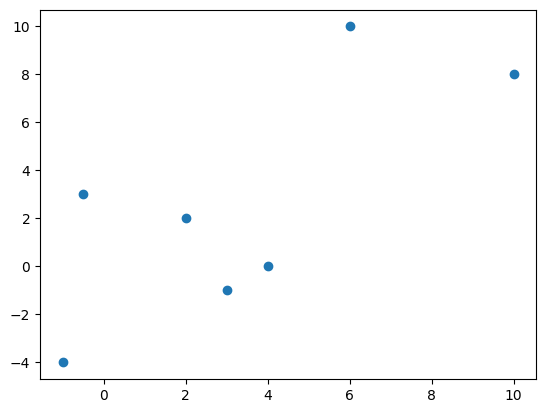
A continuación se grafica la misma función \(f\) usando lineas que unen los puntos de la grafica.
plt.plot(x, y, c = 'red')
[<matplotlib.lines.Line2D at 0x7f2924312710>]
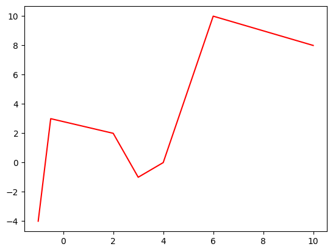
También se pueden realizar las gráficas usando marcadores conectados con líneas:
plt.plot(x, y,'-o', c="green")
plt.show()
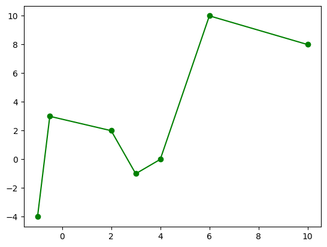
Formato de gráficas#
Podemos personalizar las gráficas:
Color, tamaño, etc.
plt.plot(x, y, linestyle='--', marker='s', color='green', markersize=8, linewidth=2)
Etiquetas en los ejes
plt.xlabel('Etiqueta eje x')
plt.ylabel('Etiqueta eje y')
plt.title('Título de la gráfica')
En la página https://matplotlib.org/ puedes encontrar información y en https://matplotlib.org/cheatsheets/ encontrarás inforgrafías de ayuda.
En la siguiente celda se grafica nuevamente la función \(f\) mejorada.
plt.plot(x,y, linestyle = ':', marker ='^', color = 'orange', markersize = 10, linewidth = 1 )
plt.title(r'Gráfica de la función $f$') #es necesario poner una r antes del texto porque el texto incluye código en LaTex
plt.xlabel('Dominio')
plt.ylabel('Contradominio')
plt.show()
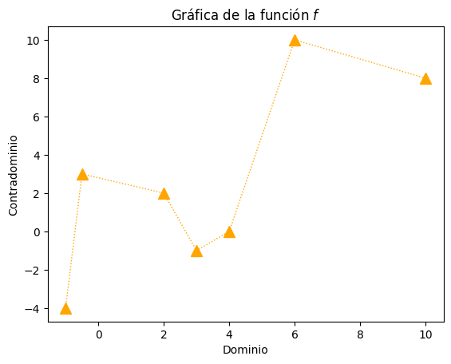
#Práctica 1. Sucesiones
Objetivo. Calcular los términos de una sucesión y graficarlos.
Sucesión.#
Las funciones más sencillas que podemos graficar son las sucesiones.
Una sucesión \(S_n\) es una función cuyo dominio es el conjunto de números naturales \(\mathbb{N}\) y el contradominio es el conjunto de números reales \(\mathbb R\):
Por ejemplo: $$
$$
Cálculo de los términos de una sucesión#
Para calcular los términos de una sucesión podemos utilizar arreglos numérios de la biblioteca de numpy.
En la siguiente celda de código se calculan los términos de la sucesión \(S_n=\frac{1}{n}\) para valores de \(n\leq20\)
import numpy as np
# Cálculo de los términos de la sucesión Sn=1/n
n = np.array([1,2,3,4,5,6,7,8,9,10,11,12,13,14,15,16,17,18,19,20])
Sn = 1/n
print(Sn)
[1. 0.5 0.33333333 0.25 0.2 0.16666667
0.14285714 0.125 0.11111111 0.1 0.09090909 0.08333333
0.07692308 0.07142857 0.06666667 0.0625 0.05882353 0.05555556
0.05263158 0.05 ]
#Usando bucle for
n = [1,2,3,4,5,6,7,8,9,10,11,12,13,14,15,16,17,18,19,20]
Sn = []
for i in n:
S = 1/i
Sn.append(S)
print(n)
print(Sn)
# Otra forma
Sn = []
for n in range(1, 21):
Sn.append(1/n)
print(Sn)
#Una más
Sn = [1/n for n in range(1, 21)]
print(Sn)
[1, 2, 3, 4, 5, 6, 7, 8, 9, 10, 11, 12, 13, 14, 15, 16, 17, 18, 19, 20]
[1.0, 0.5, 0.3333333333333333, 0.25, 0.2, 0.16666666666666666, 0.14285714285714285, 0.125, 0.1111111111111111, 0.1, 0.09090909090909091, 0.08333333333333333, 0.07692307692307693, 0.07142857142857142, 0.06666666666666667, 0.0625, 0.058823529411764705, 0.05555555555555555, 0.05263157894736842, 0.05]
[1.0, 0.5, 0.3333333333333333, 0.25, 0.2, 0.16666666666666666, 0.14285714285714285, 0.125, 0.1111111111111111, 0.1, 0.09090909090909091, 0.08333333333333333, 0.07692307692307693, 0.07142857142857142, 0.06666666666666667, 0.0625, 0.058823529411764705, 0.05555555555555555, 0.05263157894736842, 0.05]
[1.0, 0.5, 0.3333333333333333, 0.25, 0.2, 0.16666666666666666, 0.14285714285714285, 0.125, 0.1111111111111111, 0.1, 0.09090909090909091, 0.08333333333333333, 0.07692307692307693, 0.07142857142857142, 0.06666666666666667, 0.0625, 0.058823529411764705, 0.05555555555555555, 0.05263157894736842, 0.05]
Función arange#
Otra forma de declarar un arreglo de numpy que contenga números enteros de \(1\) a \(n\) es utilizando la función arange
np.arange(1,n+1)
# Ejemplo
n = np.arange(1,21)
print(n)
Sn = 1/n
print(Sn)
[ 1 2 3 4 5 6 7 8 9 10 11 12 13 14 15 16 17 18 19 20]
[1. 0.5 0.33333333 0.25 0.2 0.16666667
0.14285714 0.125 0.11111111 0.1 0.09090909 0.08333333
0.07692308 0.07142857 0.06666667 0.0625 0.05882353 0.05555556
0.05263158 0.05 ]
Actividad 1.1#
Obtén los términos y la gráfica de las siguientes sucesiones:
\(\displaystyle \alpha_n =1+\frac{1}{n}\), con \(n\leq10\)
\(\displaystyle \beta_n = (-1)^n\), con \(n\leq10\)
\(\displaystyle \gamma_n = \sin\Big(13+\frac{1}{n^2}\Big)\), con \(n\leq20\)
\(\displaystyle \delta_n=\frac{1}{n^2}\), con \(n\leq30\)
\(\displaystyle \theta_n=\frac{n}{n+1}\), con \(n\leq15\)
\(\displaystyle S_n=\frac{n+3}{n^3+4}\), con \(n\leq25\)
\(\displaystyle R_n=\frac{n!}{n^n}\), con \(n\leq10\)
\(\displaystyle M_n=\frac{2n}{3n^2+2n+1}\), con \(n\leq20\)
\(\displaystyle Q_n=3n^n\), con \(n\leq20\)
\(\displaystyle W_n=\frac{3^n+(-1)^n}{3^{n+1}+(-1)^{n+1}}\), con \(n\leq20\)
# 1. an = 1 + (1/n), n<=10
import numpy as np
from matplotlib import pyplot as plt
#Cálculo de los términos
i = 10
n = np.arange(1, i+1)
alpha_n = 1+(1/n)
#Gráfica de la sucesión
plt.scatter(n, alpha_n, marker = 's')
plt.title(r'Sucesión $\alpha_n = 1+\frac{1}{n}$', fontsize = 14)
plt.xlabel(r'$n$', fontsize = 12)
plt.ylabel(r'$\alpha_n$', fontsize = 12)
plt.grid(True,) # Traza una cuadrícula
plt.axhline(1, color = 'black', linewidth = 2) #traza una línea horizontal en 0
plt.axvline(0, color = 'black', linewidth = 2) #Traza una línea vertical en 0
plt.show()
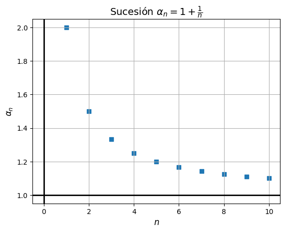
# 2. bn = (-1)^n, n<=10
import numpy as np
from matplotlib import pyplot as plt
#Cálculo de los términos
i = 10
n = np.arange(1, i+1)
beta_n = (-1)**n
#Gráfica de la sucesión
plt.scatter(n, beta_n, marker = 'o')
plt.title(r'Sucesión $\beta_n = (-1)^{n}$', fontsize = 14)
plt.xlabel(r'$n$', fontsize = 12)
plt.ylabel(r'$\beta_n$', fontsize = 12)
plt.grid(True)
plt.axhline(0, color = 'black', linewidth = 2)
plt.axvline(0, color = 'black', linewidth = 2)
plt.show()
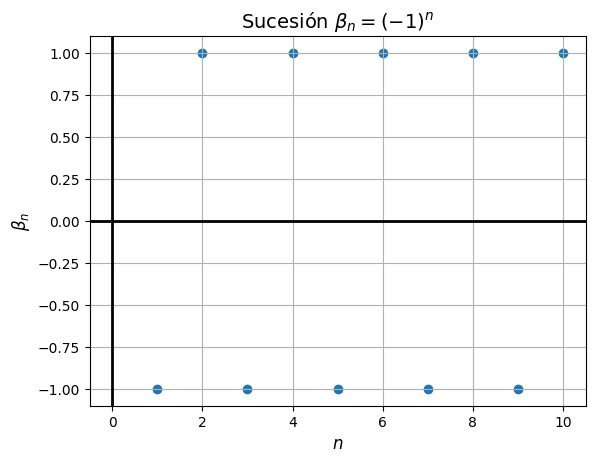
# 3. gn = (-1)^n, n<=10
import numpy as np
from matplotlib import pyplot as plt
#Cálculo de los términos
i = 20
n = np.arange(1, i+1)
gamma_n = np.sin(13+1/(n**2))
#Gráfica de la sucesión
plt.scatter(n, gamma_n, marker = '^')
plt.title(r'Sucesión $\gamma_n = \sin(13+\frac{1}{n^2}$', fontsize = 14)
plt.xlabel(r'$n$', fontsize = 12)
plt.ylabel(r'$\gamma_n$', fontsize = 12)
plt.grid(True)
plt.axhline(0, color = 'black', linewidth = 2)
plt.axvline(0, color = 'black', linewidth = 2)
plt.show()
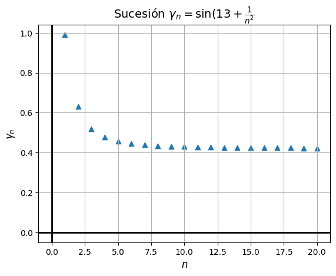
# Continuar
Práctica 2. Funciones de variable real#
Objetivo. Graficar funciones de variable real en dominios discretos acotados.
Función de variable real#
Una función \(f\) de variable real es una función cuyo dominio es un subconjunto de números reales \(\mathbb{R}\) y el contradominio es el conjunto de números reales \(\mathbb R\):
Por ejemplo: $$
$$
Para graficar una fucnión de variable real, debemos especificar el subconjunto del dominio y su respectiva imagen que queremos graficar. Para ello nuevamente utilizamos arreglos de la biblioteca Numpy.
Función linspace#
En Python podemos generar un subconjunto de \(n\) números reales comprendidos en el intervalo \([a, b]\) equiespaciados (también llamado dominio discreto) usando la función linspace de Numpy. Observa que se incluyen los extremos del intervalo
np.linspace(a,b,n)
Por ejemplo en la siguiente celda de código se muestra el conjunto de 100 números reales en el intervalo \([0,10]\) todos equiespaciados.
x = np.linspace(1, 10, 100)
print(x)
len(x)
[ 1. 1.09090909 1.18181818 1.27272727 1.36363636 1.45454545
1.54545455 1.63636364 1.72727273 1.81818182 1.90909091 2.
2.09090909 2.18181818 2.27272727 2.36363636 2.45454545 2.54545455
2.63636364 2.72727273 2.81818182 2.90909091 3. 3.09090909
3.18181818 3.27272727 3.36363636 3.45454545 3.54545455 3.63636364
3.72727273 3.81818182 3.90909091 4. 4.09090909 4.18181818
4.27272727 4.36363636 4.45454545 4.54545455 4.63636364 4.72727273
4.81818182 4.90909091 5. 5.09090909 5.18181818 5.27272727
5.36363636 5.45454545 5.54545455 5.63636364 5.72727273 5.81818182
5.90909091 6. 6.09090909 6.18181818 6.27272727 6.36363636
6.45454545 6.54545455 6.63636364 6.72727273 6.81818182 6.90909091
7. 7.09090909 7.18181818 7.27272727 7.36363636 7.45454545
7.54545455 7.63636364 7.72727273 7.81818182 7.90909091 8.
8.09090909 8.18181818 8.27272727 8.36363636 8.45454545 8.54545455
8.63636364 8.72727273 8.81818182 8.90909091 9. 9.09090909
9.18181818 9.27272727 9.36363636 9.45454545 9.54545455 9.63636364
9.72727273 9.81818182 9.90909091 10. ]
100
x = np.linspace(0,10, 101)
print(x)
[ 0. 0.1 0.2 0.3 0.4 0.5 0.6 0.7 0.8 0.9 1. 1.1 1.2 1.3
1.4 1.5 1.6 1.7 1.8 1.9 2. 2.1 2.2 2.3 2.4 2.5 2.6 2.7
2.8 2.9 3. 3.1 3.2 3.3 3.4 3.5 3.6 3.7 3.8 3.9 4. 4.1
4.2 4.3 4.4 4.5 4.6 4.7 4.8 4.9 5. 5.1 5.2 5.3 5.4 5.5
5.6 5.7 5.8 5.9 6. 6.1 6.2 6.3 6.4 6.5 6.6 6.7 6.8 6.9
7. 7.1 7.2 7.3 7.4 7.5 7.6 7.7 7.8 7.9 8. 8.1 8.2 8.3
8.4 8.5 8.6 8.7 8.8 8.9 9. 9.1 9.2 9.3 9.4 9.5 9.6 9.7
9.8 9.9 10. ]
# Si quiero equiespaciar h = 0.2
x = np.linspace(0,10, 100, endpoint=False) #se excluye el último punto
print(x)
[0. 0.1 0.2 0.3 0.4 0.5 0.6 0.7 0.8 0.9 1. 1.1 1.2 1.3 1.4 1.5 1.6 1.7
1.8 1.9 2. 2.1 2.2 2.3 2.4 2.5 2.6 2.7 2.8 2.9 3. 3.1 3.2 3.3 3.4 3.5
3.6 3.7 3.8 3.9 4. 4.1 4.2 4.3 4.4 4.5 4.6 4.7 4.8 4.9 5. 5.1 5.2 5.3
5.4 5.5 5.6 5.7 5.8 5.9 6. 6.1 6.2 6.3 6.4 6.5 6.6 6.7 6.8 6.9 7. 7.1
7.2 7.3 7.4 7.5 7.6 7.7 7.8 7.9 8. 8.1 8.2 8.3 8.4 8.5 8.6 8.7 8.8 8.9
9. 9.1 9.2 9.3 9.4 9.5 9.6 9.7 9.8 9.9]
En la siguiente celda de código se establece un subconjunto del dominio de la función \(f(x)= 3x+2\) y se calcula la imagen de éstos elementos.
# Función
x = np.linspace(-5,5, 101)
fx = 3*x+2
print(x)
print(fx)
[-5. -4.9 -4.8 -4.7 -4.6 -4.5 -4.4 -4.3 -4.2 -4.1 -4. -3.9 -3.8 -3.7
-3.6 -3.5 -3.4 -3.3 -3.2 -3.1 -3. -2.9 -2.8 -2.7 -2.6 -2.5 -2.4 -2.3
-2.2 -2.1 -2. -1.9 -1.8 -1.7 -1.6 -1.5 -1.4 -1.3 -1.2 -1.1 -1. -0.9
-0.8 -0.7 -0.6 -0.5 -0.4 -0.3 -0.2 -0.1 0. 0.1 0.2 0.3 0.4 0.5
0.6 0.7 0.8 0.9 1. 1.1 1.2 1.3 1.4 1.5 1.6 1.7 1.8 1.9
2. 2.1 2.2 2.3 2.4 2.5 2.6 2.7 2.8 2.9 3. 3.1 3.2 3.3
3.4 3.5 3.6 3.7 3.8 3.9 4. 4.1 4.2 4.3 4.4 4.5 4.6 4.7
4.8 4.9 5. ]
[-13. -12.7 -12.4 -12.1 -11.8 -11.5 -11.2 -10.9 -10.6 -10.3 -10. -9.7
-9.4 -9.1 -8.8 -8.5 -8.2 -7.9 -7.6 -7.3 -7. -6.7 -6.4 -6.1
-5.8 -5.5 -5.2 -4.9 -4.6 -4.3 -4. -3.7 -3.4 -3.1 -2.8 -2.5
-2.2 -1.9 -1.6 -1.3 -1. -0.7 -0.4 -0.1 0.2 0.5 0.8 1.1
1.4 1.7 2. 2.3 2.6 2.9 3.2 3.5 3.8 4.1 4.4 4.7
5. 5.3 5.6 5.9 6.2 6.5 6.8 7.1 7.4 7.7 8. 8.3
8.6 8.9 9.2 9.5 9.8 10.1 10.4 10.7 11. 11.3 11.6 11.9
12.2 12.5 12.8 13.1 13.4 13.7 14. 14.3 14.6 14.9 15.2 15.5
15.8 16.1 16.4 16.7 17. ]
Actividad 2.1#
Obtén la gráfica de las siguientes siguientes funciones en el intervalo del dominio especificado:
\(\displaystyle f(x) = -2x+3\), \(x \in [ -3,3 ]\)
\(\displaystyle g(x) = x^2 +1\), \(x \in [ -5,5 ]\)
\(\displaystyle P(x) = x^4 - 20x^3 +2x^2 +1\), \(x \in [ -5,5 ]\)
\(\displaystyle h(x) = 2\sin(x)\), \(x \in [ -2\pi,2\pi ]\)
\(\displaystyle r(x) = \arccos(x)\), \(x \in [-1, 1]\)
\(\displaystyle f(x) = \ln(x)\), \(x \in (0, 3]\)
\(\displaystyle C(x) = 3\), \(x \in [-2, 3]\)
- \[\begin{split} f(x) = \begin{cases} x^2 + 1, & \text{si } x < 0 \\ \sqrt{x}, & \text{si } 0 \leq x \leq 1 \\ \ln(x), & \text{si } x > 1 \end{cases} \end{split}\]
from matplotlib import pyplot as plt
import numpy as np
#1. f(x) = -2x+3 con x \in [ -3,3 ]
x = np.linspace(-3,3, 11)
fx = -2*x+3
plt.scatter(x, fx)
plt.title(r"$f(x) = -2x+3$")
plt.xlabel(r'$x$')
plt.ylabel(r'$y$')
plt.axhline(0, color = 'black', linewidth = 1.5)
plt.axvline(0, color = 'black', linewidth = 1.5)
plt.show()
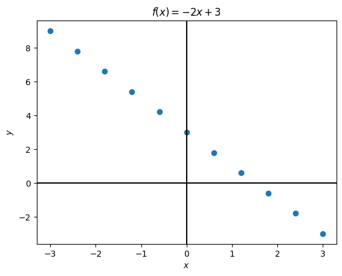
from matplotlib import pyplot as plt
#1. f(x) = -2x+3 con x \in [ -3,3 ]
x = np.linspace(-3,3, 11)
fx = -2*x+3
plt.plot(x, fx) #no olvidar que se unen los puntos de la gráfica con líneas rectas
plt.title(r"$f(x) = -2x+3$")
#plt.xlabel(r'$x$')
#plt.ylabel(r'$y$')
plt.axhline(0, color = 'black', linewidth = 1.5)
plt.axvline(0, color = 'black', linewidth = 1.5)
#mover los ejes
ax = plt.gca()
ax.spines['left'].set_position('zero') # mueve el eje y al centro (x = 0)
ax.spines['bottom'].set_position('zero') # mueve eje x a y = 0
ax.spines['top'].set_color('none') #oculta el borde superior
ax.spines['right'].set_color('none') #oculta el borde de la derecha
#etiquetar los ejes
ax.text(3.5, -0.2,'$x$',fontsize=12)
ax.text(0.2,9.2, '$y$',fontsize=12)
plt.show()
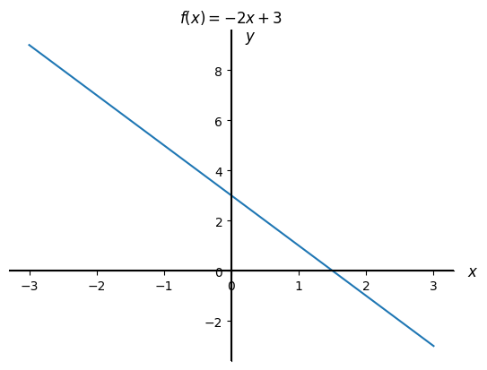
# 2. g(x) = x^2 +1, x \in [ -5,5 ]
x = np.linspace(-5,5, 11)
g = x**2+1
plt.scatter(x, g, color = "black")
plt.plot(x, g, color ="red")
plt.title(r"$g(x) = x^2 +1$")
plt.xlabel(r'$x$')
plt.ylabel(r'$y$')
plt.axhline(0, color = 'black', linewidth = 1.5)
plt.axvline(0, color = 'black', linewidth = 1.5)
plt.show()
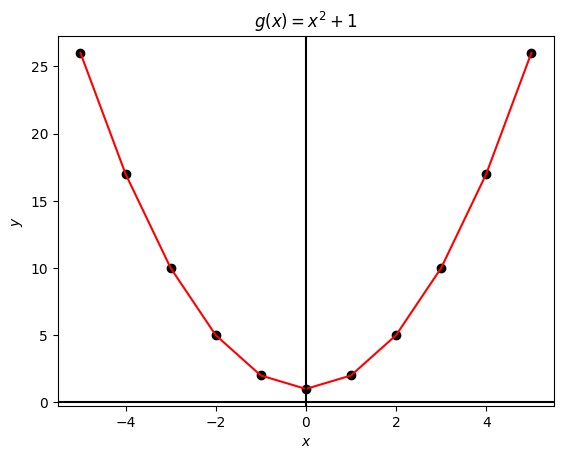
#2. g(x) = x^2 - 2x +1, x \in [ -5,5 ]
x = np.linspace(-5,5, 101)
g = x**2+1
#plt.scatter(x, g, color = "black")
plt.plot(x, g, color ="red")
plt.title(r"$g(x) = x^2 +1$")
plt.xlabel(r'$x$')
plt.ylabel(r'$y$')
plt.axhline(0, color = 'black', linewidth = 1.5)
plt.axvline(0, color = 'black', linewidth = 1.5)
plt.show()
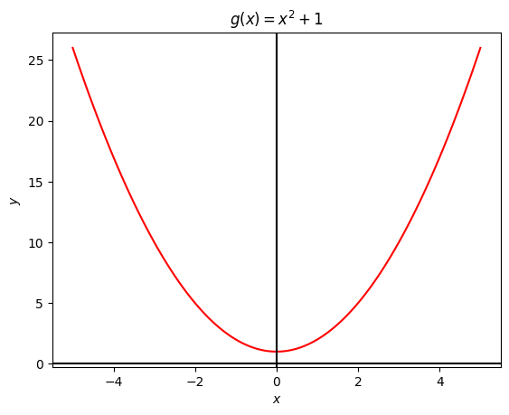
# 3. P(x) = x^4 - 20x^3 +2x^2 +1 x \in [ -5,5 ]
x = np.linspace(-5,5,101)
P = x**4 - 20*x**3 +2*x**2 +1
plt.plot(x,P, c="pink")
plt.title(r"$P(x) = x^4 - 20x^3 +2x^2 +1$")
plt.xlabel(r"$x$")
plt.ylabel(r"y")
plt.show()
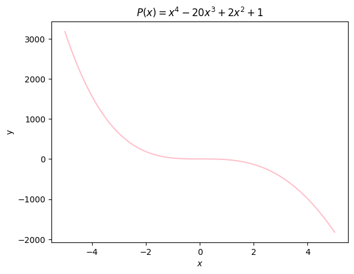
# 4. h(x) = 2\sin(x) x \in [ -2\pi,2\pi ]
x = np.linspace(-2*np.pi,2*np.pi,101)
h = np.sin(x)
plt.plot(x,h, c="green")
plt.title(r"$h(x)=2\sin(x)$")
plt.xlabel(r"$x$")
plt.ylabel(r"y")
plt.axhline(0, color = 'black', linewidth = 1.5)
plt.axvline(0, color = 'black', linewidth = 1.5)
plt.show()
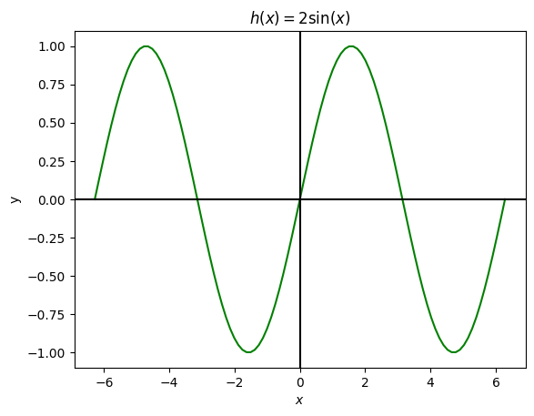
# 5. r(x) = \arccos(x) x \in [-1, 1]
x = np.linspace(-1, 1, 1001) #notar que siaumentamos los puntos en el dominio mejora la gráfica cerca de -1 y 1
r = np.acos(x)
plt.plot(x,r, c="green")
plt.title(r"$r(x) = \arccos(x)$")
plt.xlabel(r"$x$")
plt.ylabel(r"y")
plt.axhline(0, color = 'black', linewidth = 1.5)
plt.axvline(0, color = 'black', linewidth = 1.5)
plt.show()
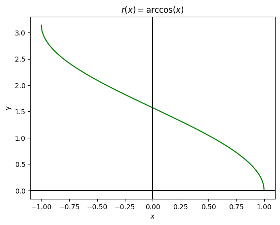
# 6. f(x) = \ln(x) x \in (0, 3]
x = np.linspace(0, 3, 101)
x_ab = x[1:] #intervalo abierto del lado izquierdo
f = np.log(x_ab)
#print(len(x_ab), len(f))
plt.plot(x_ab,f, c="blue")
plt.title(r"$f(x) = \ln(x)$")
plt.xlabel(r"$x$")
plt.ylabel(r"y")
plt.axhline(0, color = 'black', linewidth = 1.5)
plt.axvline(0, color = 'black', linewidth = 1.5)
plt.show()
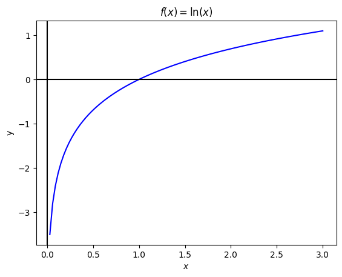
# 7. C(x) = 3 x \in [-2, 3]
x = np.linspace(-2, 3, 101)
C = 0*x+3
#Otra forma
#C = 3*ones_like(x)
plt.plot(x,C, c="orange")
plt.title(r"$C(x) = 3$")
plt.xlabel(r"$x$")
plt.ylabel(r"y")
plt.axhline(0, color = 'black', linewidth = 1.5)
plt.axvline(0, color = 'black', linewidth = 1.5)
plt.show()
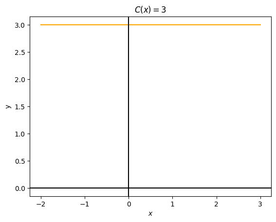
# 8. Funcion por partes f(x) = x^2 + 1, x < 0 | \sqrt{x} 0 <= x <= 2 | \ln(x) x > 2
x1 = np.linspace(-2, 0, 101, endpoint=False)
x2 = np.linspace(0,2, 101)
x3 = np.linspace(2, 3, 101)
x3_ab = x3[1:]
f1 = x1**2 + 1
plt.plot(x1,f1, color="red")
plt.scatter(0, 0**2+1,facecolors='none', edgecolors='red', lw=1.5) #opcional
plt.scatter(0, np.sqrt(0), color='blue', lw=1.5) #opcional
f2 = np.sqrt(x2)
plt.plot(x2,f2, color ="blue")
plt.scatter(2, np.sqrt(2), color='blue', lw=1.5) #opcional
plt.scatter(2, np.log(2),facecolors='none', edgecolors='green', lw=1.5) #opcional
f3 = np.log(x3_ab)
plt.plot(x3_ab,f3, color ="green" )
plt.title(r"$f(x) = \{ x^2 + 1\ \text{ si } x < 0;\ \sqrt{x}\ \text{ si } 0 \leq x \leq 1;\ \ln(x)\ \text{ si } x > 1 $")
plt.xlabel(r"$x$")
plt.ylabel(r"y")
plt.axhline(0, color = 'black', linewidth = 1.5)
plt.axvline(0, color = 'black', linewidth = 1.5)
plt.show()
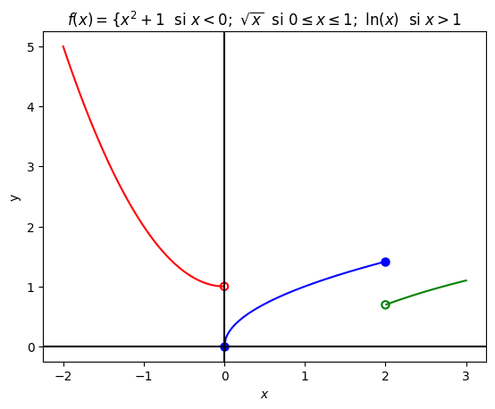
Actividad 2.2#
Dada la función \(g(t)= t^2\), obtén las siguientes gráficas e indica las diferencias que observas con la gráfica de \(g(t)\):
\(g_1(t) = t^2-1\)
\(g_2(t) = (t+2)^2\)
\(g_3(t) = (t-1)^2+3\)
\(g_4(t) = 2t^2\)
\(g_5(t) = \frac{1}{3}t^2\)
\(g_6(t) = -t^2\)
\(g_7(t) = -2(t-1)^2+3\)
Utiliza el mismo dominio para cada gráfica.
Se puede poner un gráfico con varias gráficas usando el entorno subplots()
# Vamos a declarar un dominio común
t = np.linspace(-5, 5, 401)
# Funciones
g = t**2
g1 = t**2 - 1
g2 = (t + 2)**2
g3 = (t - 1)**2 + 3
g4 = 2 * t**2
g5 = (1/3) * t**2
g6 = -t**2
g7 = -2 * (t - 1)**2 + 3
# Lista de funciones y títulos
funciones = [
(g, r'$g(t)= t^2$'),
(g1, r'$g_1(t) = t^2 - 1$'),
(g2, r'$g_2(t) = (t+2)^2$'),
(g3, r'$g_3(t) = (t-1)^2 + 3$'),
(g4, r'$g_4(t) = 2t^2$'),
(g5, r'$g_5(t) = \frac{1}{3}t^2$'),
(g6, r'$g_6(t) = -t^2$'),
(g7, r'$g_7(t) = -2(t-1)^2 + 3$'),
]
# Hacer las gráficas
fig, axs = plt.subplots(3, 3, figsize=(12, 12))
axs = axs.flatten() # para recorrer fácilmente
#print(axs)
# Graficar cada transformación y la original
for i, (gi, titulo) in enumerate(funciones):
axs[i].plot(t, g, '--', color='gray') # función original
axs[i].plot(t, gi, label=titulo, color='blue')
axs[i].set_xlabel(r'$t$')
axs[i].set_ylabel(r'$g$')
axs[i].set_title(titulo)
axs[i].grid(True)
axs[i].legend()
axs[i].axhline(0, color='black', linewidth=1.5)
axs[i].axvline(0, color='black', linewidth=1.5)
# El último subplot vacío
axs[-1].axis('off')
plt.suptitle('Transformaciones de la función $g(t) = t^2$', fontsize=16)
plt.tight_layout(rect=[0, 0, 1, 0.96])
plt.show()
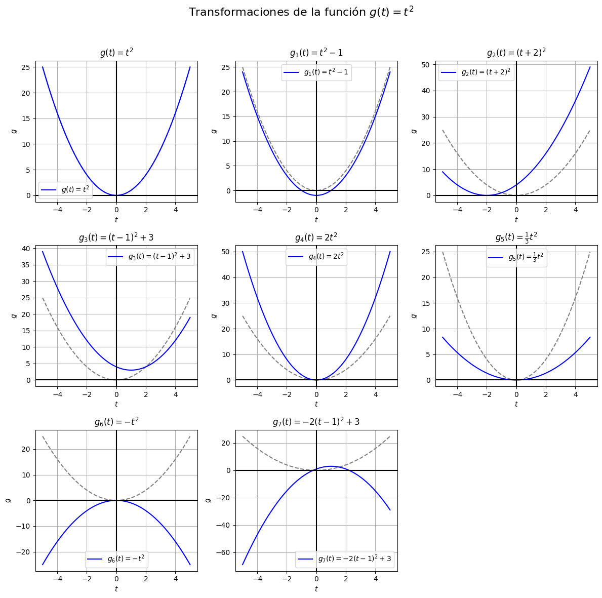
Actividad 2.3#
Dada la función \(h(x)= \cos(x)\), obtén las siguientes gráficas e indica las diferencias que observas con la gráfica de \(g(t)\):
\(h_1(x) = \cos(x)-1\)
\(h_2(x) = \cos \Big(x+\frac{\pi}{4} \Big)\)
\(h_3(x) = \cos \Big(x+\frac{\pi}{4} \Big)-1\)
\(h_4(x) = 2\cos(x)\)
\(h_5(t) = \frac{1}{3}\cos(x)\)
\(h_6(t) = -\cos(x)\)
\(g_7(t) = 2\cos \Big(x+\frac{\pi}{4} \Big)-1\)
Utiliza el mismo dominio para cada gráfica.
# Vamos a declarar un dominio común
x = np.linspace(-2*np.pi, 2*np.pi, 401)
# Funciones
h = np.cos(x)
h1 = np.cos(x)-1
h2 = np.cos(x+np.pi/4)
h3 = np.cos(x+np.pi/4)-1
h4 = 2*np.cos(x)
h5 = (1/3)*np.cos(x)
h6 = -np.cos(x)
h7 = 2*np.cos(x+np.pi/4)-1
print(len(h1))
# Lista de funciones y títulos
funciones = [
(h, r'$g(t)= \cos(x)$'),
(h1, r'$h_1(x) = \cos(x)-1$'),
(h2, r'$h_2(x) = \cos (x+\frac{\pi}{4} )$'),
(h3, r'$h_3(x) = \cos (x+\frac{\pi}{4} )-1$'),
(h4, r'$h_4(x) = 2\cos(x)$'),
(h5, r'$h_5(t) = \frac{1}{3}\cos(x)$'),
(h6, r'$h_6(t) = -\cos(x)$'),
(h7, r'$h_7(t) = 2\cos (x+\frac{\pi}{4} )-1$'),
]
# Hacer las gráficas
fig, axs = plt.subplots(3, 3, figsize=(12, 12))
axs = axs.flatten() # para recorrer fácilmente
#print(axs)
# Graficar cada transformación y la original
for i, (hi, titulo) in enumerate(funciones):
axs[i].plot(x, h, '--', color='gray') # función original
axs[i].plot(x, hi, label=titulo, color='blue')
axs[i].set_xlabel(r'$x$')
axs[i].set_ylabel(r'$h$')
axs[i].set_title(titulo)
axs[i].grid(True)
axs[i].legend()
axs[i].axhline(0, color='black', linewidth=1.5)
axs[i].axvline(0, color='black', linewidth=1.5)
# El último subplot vacío
axs[-1].axis('off')
plt.suptitle('Transformaciones de la función $h(x) = \cos(x)$', fontsize=16)
plt.tight_layout(rect=[0, 0, 1, 0.96])
plt.show()
401
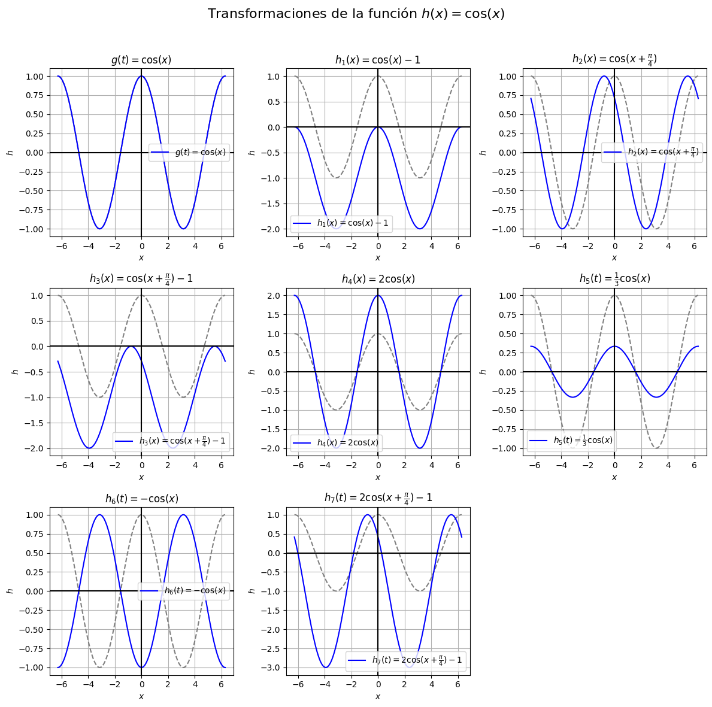
Complemento: Definición de funciones empelando def y lambda#
Una función se puede definir usando def de la siguiente forma:
def nombre_de_la_función (argumentos_de_la_función)
return expresión_de_la_función
También es posible hacerlo de forma más simple mediante lambda:
nombre_de_la_función = lambda argumentos_de_la_función: expresión_de_la_función
A continuación se muestra el uso de estos dos métodos para definir la siguiente función:
\(f(x)=\dfrac{x^3-4x^2+3}{x^2-2x+1}\)
def fun1(x):
return (x**3-4*x**2+3)/(x**2-2*x+1)
fun2 = lambda x: (x**3-4*x**2+3)/(x**2-2*x+1)
Al ejecutar la celda anterior, no se muestra nada en pantalla, pero las funciones han quedado guardadas en la memoria y pueden utilizarse.
En la celda de abajo escriba “fu”, observe que en el menu que se despliega aparecen las funciones que definimos, confirmadas que estan guardadas en memoria y que están listas para emplearse. En la celda de abajo evalue tanto “fun1” como “fun2” en \(x=3\).
Estas formas de definir una función se pueden extender a funciones de variables variables o, de una variable con parámetros. A continuación se muestra como definir la ecuación de segundo grado \(f(x) = ax^2+bx+c\) empleando los dos métodos, así como la forma de evaluarlas en un valor de las variables y de los parámetros.
def parabola1(x,a,b,c):
return a*x**2+b*x+c
parabola2 = lambda x,a,b,c: a*x**2+b*x+c
print(parabola1(2,1,2,1))
print(parabola2(2,1,2,1))
9
9
Una función se puede evaluar en varios valores contenidos en una lista dando como resultado otra lista con todos los resultados de la evaluación. A continuación se muestra la forma de evaluar “fun1” en los valores: \(0,2,3,4\)
num1 = [0,2,3,4] #Lista con los valores que se van a evaluar en la función
res1 = [fun1(x) for x in num1]
print(res1)
[3.0, -5.0, -1.5, 0.3333333333333333]
Para hacer esta evaluación en “fun2” es necesario emplear la función “list(map( ))” debido a que se definió empleando “lambda”.
res2 = list(map(fun2,num1))
print(res2)
[3.0, -5.0, -1.5, 0.3333333333333333]
La forma más eficiente de evaluar una función en múltiples valores es con los arreglos de la librería NumPy de la siguiente forma:
import numpy as np
val1 = np.array([0,2,3,4])
res3 = fun1(val1)
res4 = fun2(val1)
print(res3)
print(res4)
[ 3. -5. -1.5 0.33333333]
[ 3. -5. -1.5 0.33333333]
Para definir una función por tramos se recomienda usar únicamente “def” y no “lambda” debido a que se requiere usar el condicional “if” y “lambda” no acepta el uso de “if” ni otras secuencias de control como “for”. A continuación se muestra como definir la siguiente función por tramos:
def fun3(x):
if x <= 1:
return x**2+4*x-5
else:
return 2*x-3
print(fun3(0))
print(fun3(2))
-5
1
Si la función consta de 3 o más tramos podemos usar el condicional “elif” para agregar más condiciones sobre los valores de la variable. El procedimeinto se muestra a continuación para la siguiente función:
def fun4(x):
if x <= 1:
return x**2+4*x-5
elif x <= 3:
return 2*x-3
else:
return -x**2+8
print(fun4(0))
print(fun4(2))
print(fun4(4))
-5
1
-8
Es importante mencionar que este tipo de funciones no se pueden evaluar en arreglos de numpy debido a que el condicional “if” y “elif” no funcionan sobre este tipo de arreglos, sin embargo, es posible con “for” como se realizó anteriormente.
val2 = [0,1,2,3,4]
res4 = [fun4(x) for x in val2]
print(res4)
[-5, 0, 1, 3, -8]
Para que la función se pueda evaluar en arreglos de NumPy, se debe definir empleando “np.piecewise” de la siguiente forma:
def fun5(x):
return np.piecewise(x,
[x <= 1, (x > 1) & (x <= 3), x > 3],
[lambda x: x**2 + 4*x - 5,
lambda x: 2*x - 3,
lambda x: -x**2 + 8])
val3 = np.array([0,1,2,3,4])
res5 = fun5(val3)
print(res5)
[-5 0 1 3 -8]
Las funciones definidas de esta forma se pueden graficar siguiendo lo visto en las secciones anteriores. A continuación se muestra el código para
# Se establecen los valores de x para cada tramo por separado
x1 = np.linspace(-1, 1, 200)
x2 = np.linspace(1 + 1e-6, 3, 200)
x3 = np.linspace(3 + 1e-6, 5, 200)
# Se evalua la función en los tramos separados
y1 = fun5(x1)
y2 = fun5(x2)
y3 = fun5(x3)
# Se crean las gráficas para cada tramo por separado
plt.plot(x1, y1, color='purple')
plt.plot(x2, y2, color='purple')
plt.plot(x3, y3, color='purple')
# Puntos especiales en x=1
plt.scatter(1, fun5(np.array([1])), color='purple', edgecolors='black', zorder=5)
plt.scatter(1, fun5(np.array([1 + 1e-6])), facecolors='none', edgecolors='purple', s=60, linewidths=1.5, zorder=5)
# Puntos especiales en x=3
plt.scatter(3, fun5(np.array([3])), color='purple', edgecolors='black', zorder=5)
plt.scatter(3, fun5(np.array([3 + 1e-6])), facecolors='none', edgecolors='purple', s=60, linewidths=1.5, zorder=5)
# Se le da el estilo
plt.axvline(1, color='gray', linestyle='--', linewidth=0.8)
plt.axvline(3, color='gray', linestyle='--', linewidth=0.8)
plt.title(r'Gráfica de la función $f(x)$ definida por tramos')
plt.xlabel(r'$x$')
plt.ylabel(r'$f(x)$')
plt.grid(True)
plt.legend()
plt.show()
/tmp/ipykernel_2507/129748297.py:31: UserWarning: No artists with labels found to put in legend. Note that artists whose label start with an underscore are ignored when legend() is called with no argument.
plt.legend()
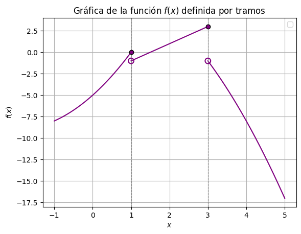
Actividad 3.1#
Realice las gráficas de las funciones 1 y 3 de la Actividad 1.1 empleando def y lambda
Actividad 3.2#
Realice las gráficas de las funciones 3 y 5 de la Actividad 1.1 empleando def y lambda